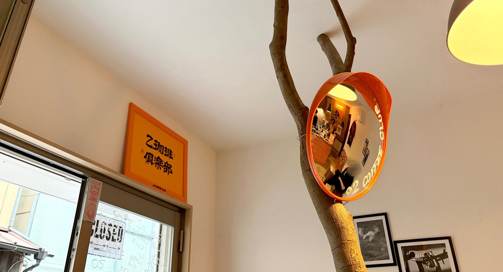
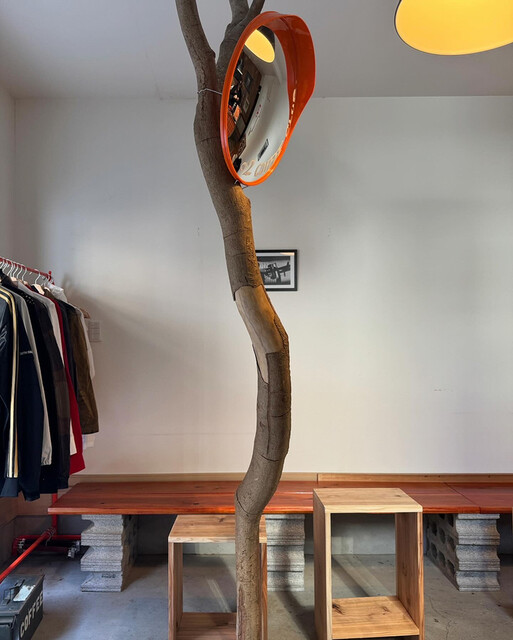

古着とオリジナルウェア
Vintage
& wear.
コーヒーを待つあいだ、店先のラックで古着選び。
オリジナルの「大入りフラワーTシャツ」には、両国らしい大入り袋を花に見立てたバックプリントが入っています。
アクセス
Visit us.
東京都墨田区両国4-21-7 1F
両国駅から徒歩約7分
営業時間 10:00–18:00 ／ 水曜定休
営業日の変更や最新のお知らせは
Instagram @o2_coffee_club へ。